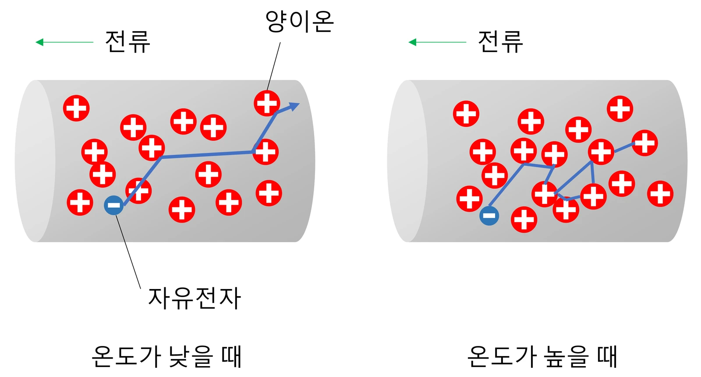

고2 물리학 · Ⅱ 전기와 자기 · 웹툰 8화 「멀티탭이 뜨거워질 때」
실험에서 저항 두 개(10·20·30·50 Ω)를 직렬 또는 병렬로 잇고 전압을 바꿔 가며 각 저항이 쓰는 전력을 쟀습니다. 직렬에서는 큰 저항이, 병렬에서는 작은 저항이 전력을 더 썼고, 같은 저항 두 개를 직렬 → 병렬로 바꾸면 총 전력이 4배가 되었습니다. 옴의 법칙과 전력, 전기 안전을 정리합니다.
실험 데이터 되짚기
전원 내부 저항·전선 저항 무시. V = 6 V, R₁ = 10 Ω, R₂ = 30 Ω 기준입니다.
| 연결 | 합성 저항 | 전체 전류 | R₁ (10 Ω) 전압 / 전류 / 전력 | R₂ (30 Ω) 전압 / 전류 / 전력 | 총 전력 |
|---|---|---|---|---|---|
| 직렬 | 40 Ω | 0.15 A | 1.5 V / 0.15 A / 0.225 W | 4.5 V / 0.15 A / 0.675 W | 0.9 W |
| 병렬 | 7.5 Ω | 0.8 A | 6 V / 0.6 A / 3.6 W | 6 V / 0.2 A / 1.2 W | 4.8 W |
| (참고) 20 Ω 두 개 직렬 | 40 Ω | 0.15 A | 3 V / 0.15 A / 0.45 W | 3 V / 0.15 A / 0.45 W | 0.9 W |
| (참고) 20 Ω 두 개 병렬 | 10 Ω | 0.6 A | 6 V / 0.3 A / 1.8 W | 6 V / 0.3 A / 1.8 W | 3.6 W (4배) |
전력의 비: 직렬 P₁ : P₂ = R₁ : R₂, 병렬 P₁ : P₂ = R₂ : R₁. 직렬에서는 큰 저항이 3배, 병렬에서는 작은 저항이 3배 씁니다. 병렬 총 전력은 직렬의 5.3배입니다.
옴의 법칙 V = IR과 전력 P = VI = I²R = V²/R가 기본입니다. 직렬 연결은 전류가 같은 길을 지나므로 전류가 같고 전압이 저항에 비례해 나뉘며 합성 저항 R = R₁ + R₂. 병렬은 두 저항에 같은 전압이 걸리고 전류가 저항에 반비례해 나뉘며 1/R = 1/R₁ + 1/R₂(합성 저항은 작은 쪽보다 더 작음). 그래서 직렬에서는 큰 저항이(P = I²R), 병렬에서는 작은 저항이(P = V²/R) 전력을 더 씁니다. 같은 저항 두 개를 직렬 → 병렬로 바꾸면 합성 저항이 1/4이 되어 총 전력이 4배가 됩니다.
움직여 보기
직렬과 병렬 — 어느 저항이 더 밝게 달아오를까
하늘색 점의 빠르기 = 전류, 노란 빛의 크기 = 소비 전력. 직렬에서는 전류가 같아 큰 저항(P = I²R)이, 병렬에서는 전압이 같아 작은 저항(P = V²/R)이 더 밝습니다. R₁ = R₂ = 20 Ω으로 놓고 직렬 → 병렬로 바꾸면 총 전력이 0.9 W → 3.6 W, 4배가 됩니다. 전원 내부 저항·전선 저항 무시.
집 안의 전기 제품은 모두 병렬로 연결되어 어떤 제품을 켜든 끄든 나머지는 같은 220 V를 받습니다. 대신 제품을 하나 켤 때마다 전체 전류가 더해집니다. 웹툰 8화: 전기난로 2000 W + 헤어드라이어 1500 W + 전기 포트 1500 W = 5000 W → I = 5000 ÷ 220 ≈ 22.7 A로 멀티탭 허용 전류 16 A를 초과. 허용 전류보다 큰 전류가 흐르면 P = I²R이라 전류 2배면 열은 4배가 되어 화재로 이어질 수 있습니다. 멀티탭 표시 용량 확인하기, 전열 기구는 한 멀티탭에 몰아 꽂지 않기, 멀티탭에 멀티탭 연결하지 않기.
움직여 보기
멀티탭 하나에 전열 기구를 하나씩 더 꽂으면
눌러서 켜고 끄세요. 병렬이라 각 제품은 그대로 220 V를 받고 전류 I = P ÷ 220만 더해집니다. 난로 + 드라이어 + 포트 = 5000 W → 22.7 A로 16 A를 넘습니다. 전선의 열은 I²R이라 전류가 2배면 4배로 커집니다(전선 저항은 그대로라고 봄).
전원 내부 저항과 전선 저항을 무시했습니다. 실제 건전지는 내부 저항(0.1~1 Ω)이 있어 병렬로 큰 전류를 흘리면 단자 전압이 떨어지고 총 전력이 계산보다 작습니다. 저항값은 온도에 따라 변해 전구 필라멘트는 뜨거워지면 저항이 10배 이상 커져 옴의 법칙 직선에서 벗어납니다. 옛날 크리스마스 전구는 직렬이라 하나가 끊기면 전부 꺼졌습니다.
교재 그림
온도가 높으면 저항이 커지는 까닭

금속 속 자유 전자는 양이온 사이를 지나가며 전류를 만듭니다(전자는 전류와 반대 방향으로 이동). 온도가 높아지면 양이온의 진동이 커져 전자가 더 자주 부딪힙니다 — 그래서 전구 필라멘트처럼 뜨거워지면 저항이 커집니다.
직렬 P₁ : P₂ = R₁ : R₂ · 병렬 P₁ : P₂ = R₂ : R₁ · 가정 220 V 병렬 · 과부하: I = P ÷ V > 허용 전류
“8라운드! 어느 쪽 전구가 더 밝을까? 난 직렬. 전류가 한 길로 모여서 세지니까.” “병렬이면 전구마다 전원에 바로 연결되잖아. 병렬이 밝을 것 같아.” … “직렬은 전압을 나눠 가져서 전구 하나가 4분의 1밖에 못 쓰는구나.”
웹툰 8화 · 12 Ω 전구·12 V: 하나 12 W, 직렬 두 개 각 3 W, 병렬 두 개 각 12 W — 제로 4 : 4 뭉치
“허용 전류보다 큰 전류가 흐르면 전선과 접점에서 열이 많이 나. P = I²R이니까 전류가 2배면 열은 4배야. 이게 화재로 이어질 수 있어.”
웹툰 8화 · 5000 W ÷ 220 V ≈ 22.7 A > 멀티탭 허용 16 A — 제로: “난로는 벽 콘센트에 따로 꽂을게요.”
P₁ = 144 ÷ 20 = 7.2 W, P₂ = 144 ÷ 50 = 2.88 W, 총 10.1 W. 작은 저항이 2.5배(= R₂ : R₁) 더 씁니다.
16 × 220 = 3,520 W. 둘이면 3,500 W로 턱걸이 — 여기에 하나만 더 꽂으면 초과합니다. 전열 기구는 벽 콘센트에 따로 꽂는 것이 안전합니다.